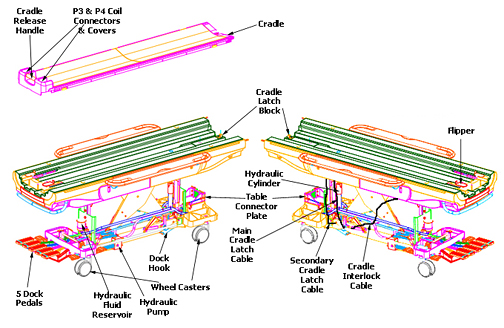

Operating Documentation
Direction 5670000, Rev# 1
Optima MR450w 1.5T Service Methods
Module Version 3.0, Version Date 11/18/08
Operating Documentation |
Several procedures relating to components of the Patient Table require the removal of the table Upper Bellows and Lower Base Side Cover. Refer to Patient Table Upper Bellows and Lower Base Side Cover Removal for more information.
The following illustration depicts the major replaceable components for the Discovery MR750 Patient Table.
Illustration 1: Patient Table Main Components
